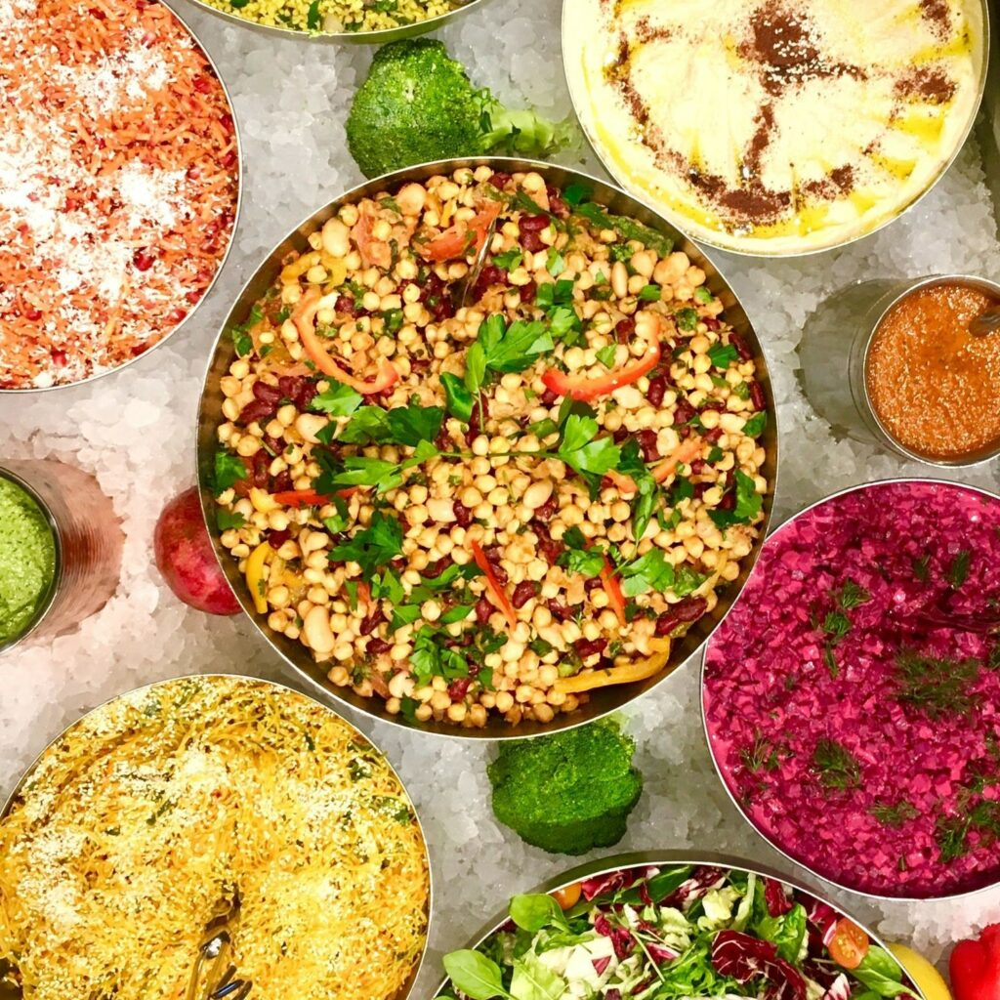
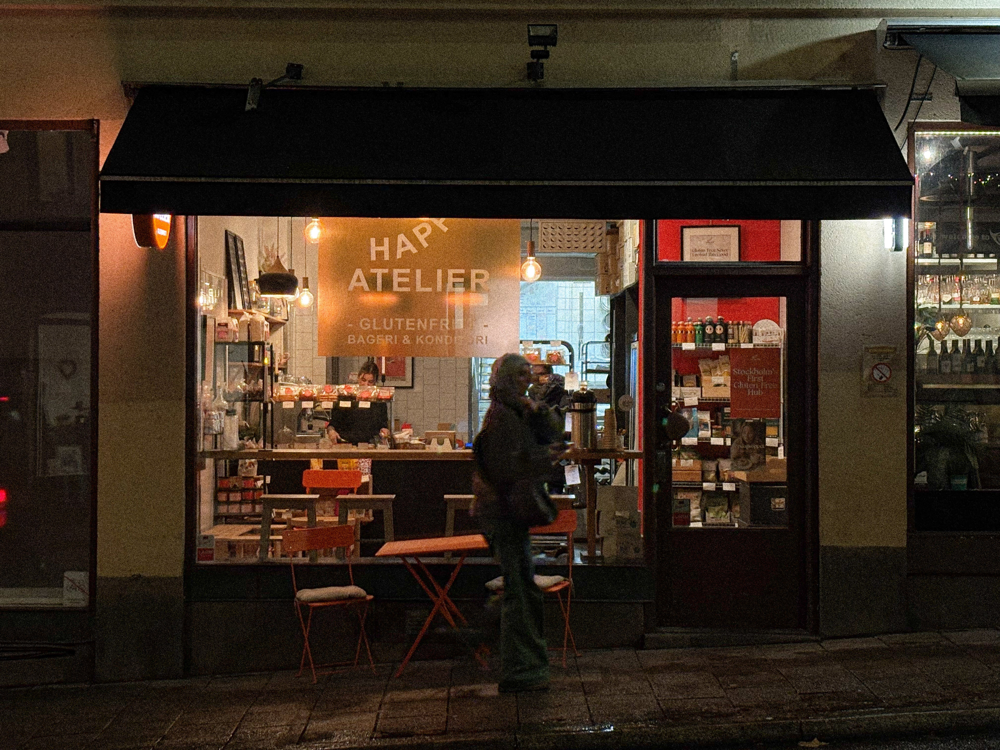

Beirut Bistro
Kungsholmen, Stockholm
Beirut Bistro är en libanesisk restaurang på Kungsholmen med panoramautsikt över Ulvsundasjön. Här serveras genuin meze, grillrätter och smakrika libanesiska rätter i en varm och mysig miljö.
Upptäck de bästa halal, veganska, kosher och glutenfria restaurangerna i Stockholm med Foodie Map. Oavsett om du letar efter en mysig café, en trendig bistro eller en exklusiv gourmetrestaurang, har vi något för alla smaker.
Visar 3 restauranger
Kungsholmen, Stockholm
Beirut Bistro är en libanesisk restaurang på Kungsholmen med panoramautsikt över Ulvsundasjön. Här serveras genuin meze, grillrätter och smakrika libanesiska rätter i en varm och mysig miljö.

Slussen, Stockholm
Hermans är en populär vegansk bufférestaurang med en av Stockholms bästa utsikter. Här kan du njuta av en generös växtbaserad buffé i en lugn och mysig miljö nära Slussen.

Södermalm, Stockholm
Happy Atelier är ett glutenfritt café och bageri i Stockholm. De är helt fria från gluten, havre och laktos, och erbjuder bakverk, bröd och fika med fokus på både smak och kvalitet.